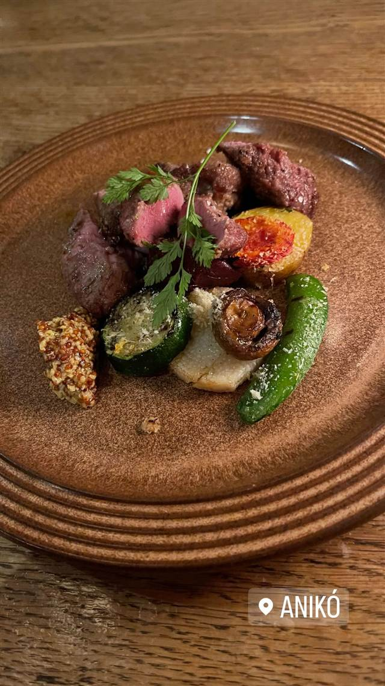

aniko（アニコ）
日本に2軒しかないマルケ州料理の店、名物はヴィンチスグラッシ
ANIKÓ
シェフ井関誠氏はイタリア各地で10年間修業し、マルケ州のミシュラン二つ星店「マドンニーナ・デル・ペスカトーレ」で日本人として初めてシェフ長を務めた経歴を持つ。2019年に開いたanikoは日本では珍しいマルケ州料理を専門とし、郷土のラザニア「ヴィンチスグラッシ」などを提供、ミシュランガイドのビブグルマンを4年連続で獲得している。
TRIVIA
豆知識
- 日本でイタリア・マルケ州の郷土料理を専門に出す店は2軒しかないとされる
- シェフはマルケ州のミシュラン二つ星店で日本人として初めてシェフ長に就いた
REVIEWS
世間の評判
3.71食べログ
マルケ郷土料理のラザニアの評判
- マルケ州の郷土料理を本格的に楽しめる店として名物のラザニアを評価する声が多い
- ソムリエによるマルケワインの説明や相性の良さを評価する人が多い
- 提供スピードの遅さや接客対応にばらつきがあるという指摘もある
- ラザニアの量が多く食べきれないという声もある
食べログ 口コミ762件
| 創業 | 2019年開業 |
|---|---|
| 系譜 | イタリア・マルケ州のミシュラン二つ星「マドンニーナ・デル・ペスカトーレ」で日本人として初めてシェフ長を務めた井関誠氏が独立して開いた店 |
| 看板 | マルケ州の郷土料理ヴィンチスグラッシ（マルケ風ラザニア） |
| こだわり | マルケ州の家庭料理をベースに、季節の食材を取り入れたコース仕立てで提供 |
| 掲載・評価 | ミシュランガイド東京でビブグルマンを4年連続受賞 |
| どこから | 都心 |
| 予算 | 夜 ¥6,000～¥7,999 |
| 定休日 | 日曜 |
| 予約 | 予約可 |
| 場所 | 赤坂駅 東京都港区赤坂 |
| メモ | 赤坂駅6番出口から徒歩1分、ディナーは1万5千円前後 |
食べたもの：肉料理
NEARBY
近い店・同じ系統の店
-
 ★
豚骨 赤坂見附駅
なかご
豚骨100%なのに透き通る24時間煮込みの純粋豚そば
昼 ¥1,000～¥1,999 夜 ¥1,000～¥1,999
★
豚骨 赤坂見附駅
なかご
豚骨100%なのに透き通る24時間煮込みの純粋豚そば
昼 ¥1,000～¥1,999 夜 ¥1,000～¥1,999
-
 ★
焼肉 赤坂
炭火焼肉赤坂大関
厚切り肉の草分け、A5和牛を味わう「牛一匹」コース
夜 ¥6,000～¥7,999
★
焼肉 赤坂
炭火焼肉赤坂大関
厚切り肉の草分け、A5和牛を味わう「牛一匹」コース
夜 ¥6,000～¥7,999
-
 ピザ 赤坂
Trattoria Pizzeria ESSE DUE 赤坂本店
赤坂20年超の老舗、石窯で焼く本格ナポリピッツァ
昼 ¥1,000～¥1,999 夜 ¥5,000～¥5,999
ピザ 赤坂
Trattoria Pizzeria ESSE DUE 赤坂本店
赤坂20年超の老舗、石窯で焼く本格ナポリピッツァ
昼 ¥1,000～¥1,999 夜 ¥5,000～¥5,999
-
 ピザ 赤坂見附
パレルモ 赤坂店
小田急グループが展開する南イタリア料理のトラットリア
昼 ¥1,000～¥1,999 夜 ¥3,000～¥3,999
ピザ 赤坂見附
パレルモ 赤坂店
小田急グループが展開する南イタリア料理のトラットリア
昼 ¥1,000～¥1,999 夜 ¥3,000～¥3,999
-
 うなぎ 赤坂
赤坂ふきぬき
東京で唯一とされる本格的な関東風ひつまぶしを100年続くタレで提供する
昼 ¥3,000～¥3,999 夜 ¥8,000～¥9,999
うなぎ 赤坂
赤坂ふきぬき
東京で唯一とされる本格的な関東風ひつまぶしを100年続くタレで提供する
昼 ¥3,000～¥3,999 夜 ¥8,000～¥9,999
-
 うどん・ほうとう 赤坂見附／赤坂
室町 砂場 赤坂店
室町砂場唯一ののれん分け店で天ざる天もりを考案した元祖
昼 ¥2,000～¥2,999 夜 ¥5,000～¥5,999
うどん・ほうとう 赤坂見附／赤坂
室町 砂場 赤坂店
室町砂場唯一ののれん分け店で天ざる天もりを考案した元祖
昼 ¥2,000～¥2,999 夜 ¥5,000～¥5,999